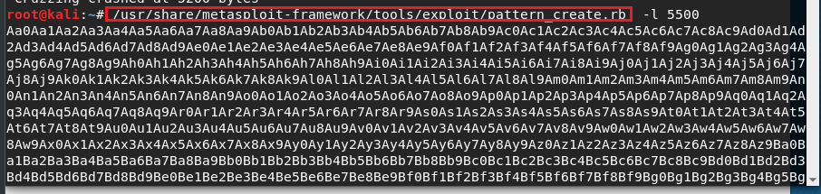

we're looking for where we overwrite the EIP that's what we want to control.
so there's a tool for that

-l is from where we find the value in previous section which is 5200 and we chose 5200 because we want to guarantee that by giving 300 bytes more.
and we take that value and send to vulnserver through findingoffset.py script.

and fire off
after the fire off we're getting the valuen in EIP through immunity debugger

and there is another tool called pattern_offset

now with that byte(2003) we can control the EIP